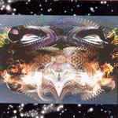

| Artist: | Djam Karet |
| Title: | A Night For Baku |
| Label: | Cuneiform Rune 169 |
| Length(s): | 60 minutes |
| Year(s) of release: | 2003 |
| Month of review: | [01/2004] |
| 1) | Dream Portal | 5.26 |
| 2) | Hunghry Ghost | 9.17 |
| 3) | Chimera Moon | 7.08 |
| 4) | Heads Of Ni-oh | 8.03 |
| 5) | Scary Circus | 3.41 |
| 6) | The Falafel King | 3.23 |
| 7) | Sexy Beast | 4.25 |
| 8) | Ukab Maerd | 7.56 |
| 9) | The Red Thread | 10.29 |
All sound samples from A Night For Baku appear here by permission of Cuneiform Record s.
Hungry Ghost starts off more enthusiastically, with moog like synths. As this dies down the track turns out to be led alternatingly by the type of guitar soloing you hear with guitar meisters and synths. The synths heave a whiny feel once again. The drums produce neurotic sound just a tad too heavy on hi-hats. Only in the moog sections does the track feel strong in this first part. About halfway through after a break the solo instruments start working on some synergy, but ending up more of a stringing of several experimental sounding bits, almost workshop like. The synths do turn up some more body, and towards the end of the track the accelerating guitar finely causes a much needed ruckus. At least we have lost the whine now.
Chimera Moon starts dreamy, almost spacy. This intro leads into a squeaky synth start, once more with dominant drums and later lingering guitar. The tempo has gone down a bit from the previous track's climax, and is now just above sedate. The guitar solo that rises from this is low tempo and not particularly striking, but the synths keep it kind of odd. This track is decent.
Heads Of Ni-oh starts led by the sedate slide guitar and the whiny synth. After a minute and a half the organ roars to the fore, only to be pushed back by the guitar, now guitar meistering again. The track remains an alternation between guitar and synth bits, at times at a decent speed, but pretty often on the slow side. The drums remain mixed too much to the fore, drawing attention even when simply supporting.
The wiggly, cheeky organ gives Scary Circus a fun feel, which can't be obscured by the ever present guitar meistering, covering synths and drums. It is unfortunate, though, that what gives this track its special feel -the organ- is mixed so far back. The Falafel King might have an interesting title, but like some falafel I've eaten lacks any distinguishing taste. A lot of guitar and a bunch of squeaky synths, but little inspiration.
Sexy Beast roars on, more experimental than melodic, but it doesn't whine and sounds okay.
Ukab Maerd has a pretty decent integration of the instruments: roary guitar, throbbing bass (finally decently audible, sometimes even as solo instrument). The ending of the track is pretty organic sounding, looped whispers and sounds on lingering guitars. Would fit in with Fripp's material.
The Red Thread kicks in right away, almost unfittingly so with the quiet end of its predecessor. The track is a string of guitar dominated sections, at times smoothly running over, but at times almost disjunct.